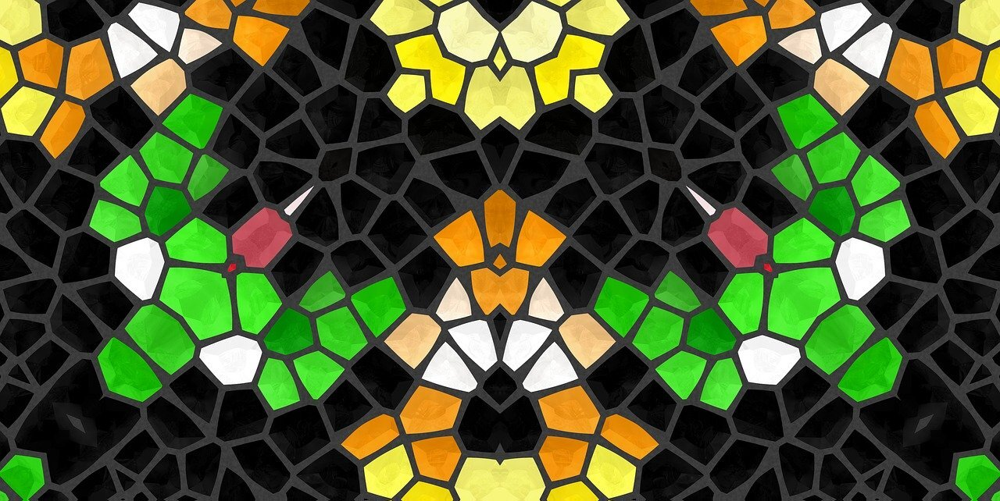

Solving terra’s “Cannot create raster from single x or y coordinate”

In R if you want to convert a table (dataframe) having coordinates into a raster you can use the function rast from the {terra} package.
Unfortunately if your dataframe has only one unique x or y coordinate you will get an error. This is because {terra} cannot infer the resolution of the raster.
The exact error you will get is:
Error: [rast] cannot create a raster geometry from a single x coordinate
or Error: [rast] cannot create a raster geometry from a single y coordinate
This was asked on Stack Overflow in February 2023
To avoid this error I wrote a function named rast_singlecoord_safe that can be used just like rast
You need to provide the resolution of the raster. The function assumes squared pixels
Here’s the function with a working example:
library(terra)
mydf <- data.frame(x = 10, y = 10, value = 42)
rast_singlecoord_safe <- function(
x, resolution = NULL, type = "xyz", crs = "",
digits = 6, extent = NULL) {
if ((length(unique(x$x)) == 1) | (length(unique(x$y)) == 1)) {
if ( is.null(resolution)) {
stop("provide the resolution of the raster")
}
additional_coords <- data.frame(
x = min(unique(x$x), na.rm = TRUE) + resolution,
y = min(unique(x$y), na.rm = TRUE) + resolution
)
additional_coords[setdiff(names(x), names(additional_coords))] <- NA
x <- rbind(x, additional_coords)
rst <- terra::rast(x,
type = type, crs = crs, digits = digits, extent=extent
)
rst <- terra::trim(rst)
} else {
rst <- terra::rast(x,
type = type, crs = crs, digits = digits, extent=extent
)
}
return(rst)
}
rast_singlecoord_safe(mydf,resolution = 100)